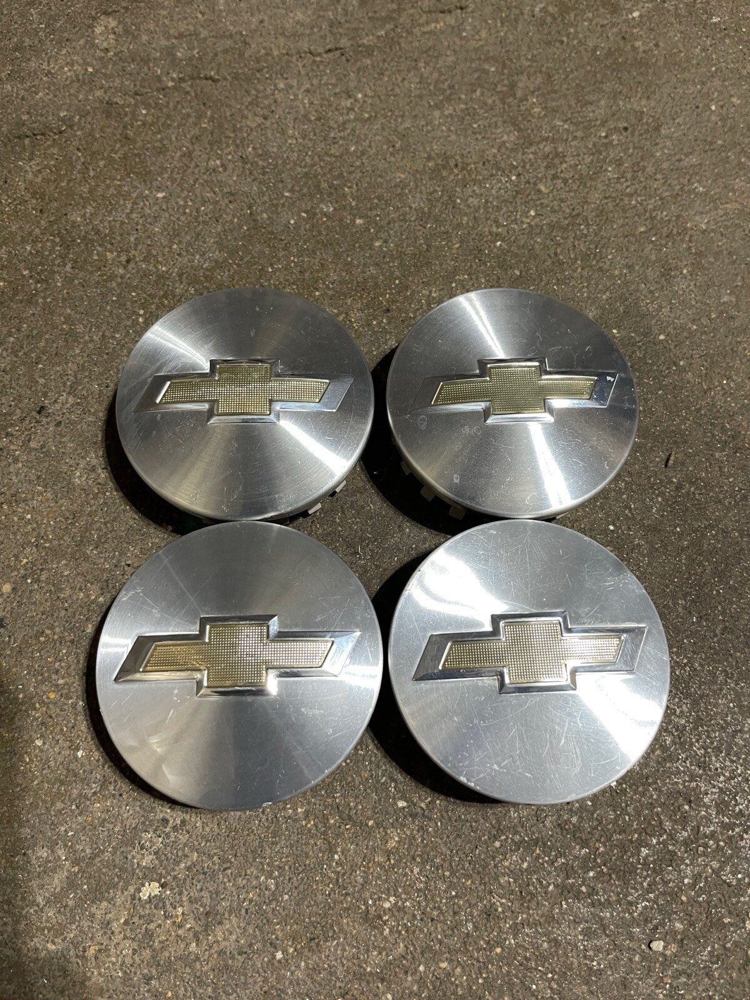
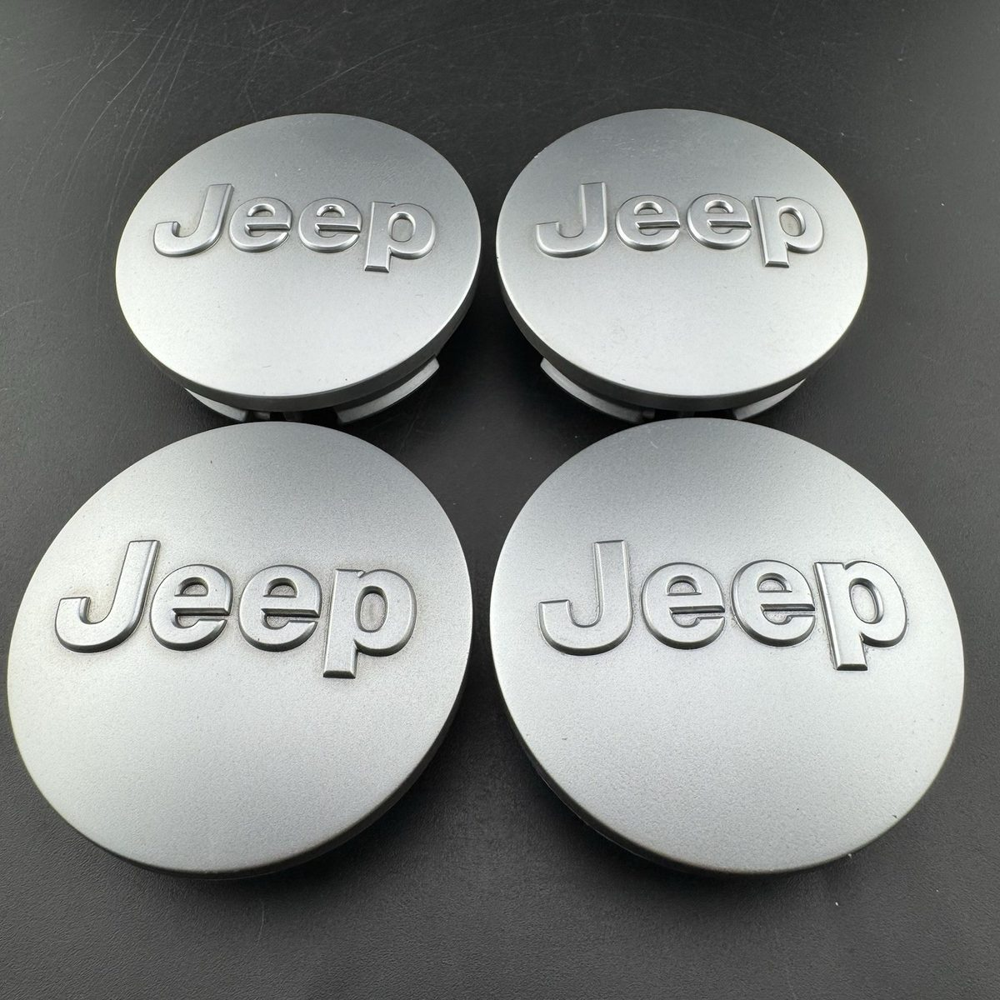
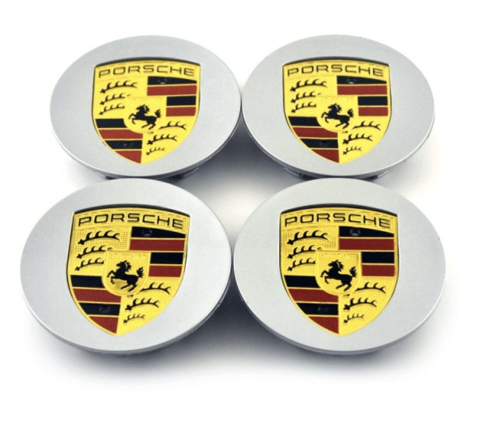
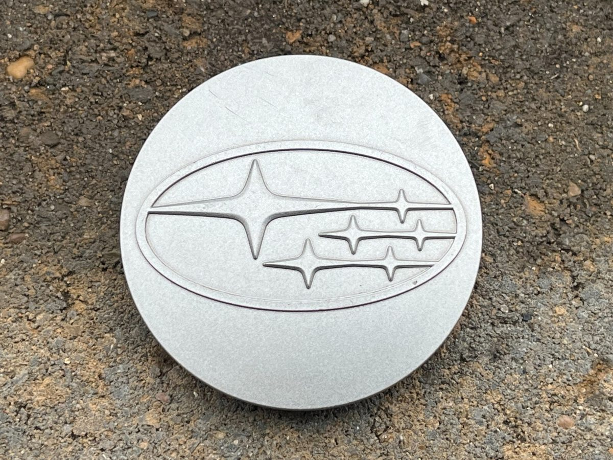
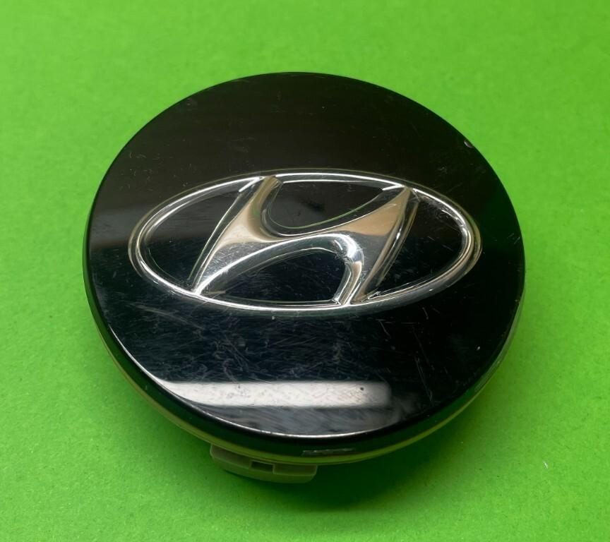

Brand Notes — Worldwide Coverage
Center Caps by Brand
Every brand has its own habits — and its own traps. We cover the makes the big catalogs cover: North American, European, Japanese and Korean, trucks to EVs. Where a brand has a well-documented cap family, we publish it with its part numbers. Where the data doesn't hold up, the entry says measure first instead of printing a number we can't back. The golden rule never changes: the wheel decides the cap, so finish with the measurement steps.
Jump to: North American · European · Japanese · Korean
Region
North American Brands
Ford

The headline: Ford is the best example of why "fits F-150" means almost nothing by itself.
- Two completely different cap families on one truck line. 1997–2004 F-150s and Expeditions used a huge 180 mm lug-cover cap (OEM YL34-1A096) that spans the lug nuts. A 2012–2014 F-150 on the 20″ alloy wheel takes a small 3″ snap-in cap (OEM CL3Z1130B). Same nameplate, nothing interchangeable.
- Part numbers are your friend. Ford cap numbers follow the pattern of the CL3Z-1130-B / 9L34-1A096-AC examples above — the number molded in the back of your old cap beats any year-range claim in a listing title.
- Hub bore ≠ cap size. The 2004+ F-150 hub bore is 87.1 mm (6×135). That's the wheel-to-hub number; the cap opening in the wheel face is its own smaller measurement. Ford cars (Focus/Escape family) run a 63.4 mm bore, 5×108 — again a wheel number, not a cap size.
- Super Duty 8-lug caps are their own world again (e.g. 1C3Z1130BA for 1999–2005 F-250/F-350) — never assume an F-150 cap crosses over.
Chevrolet / GMC

The headline: the modern GM full-size trucks are one of the most consistent fitments in the business — with one branding catch.
- 83 mm (3.25″) is the modern truck standard. Silverado, Sierra, Tahoe, Yukon and Suburban from roughly 2014–2024 commonly list an 83 mm cap, under OEM numbers like 22837060 and 20942002. Earlier and later wheels vary — measure to confirm.
- Chevy and GMC share wheels, not badges. The Sierra and Silverado share platforms and the 78.1 mm hub bore (6×139.7); a cap body that fits one usually fits the other — but the emblem differs, and some GMC wheels have different retention depth. Check the logo and the back of the cap.
- HD trucks are bigger. 2500HD/3500HD 8-lug caps are a separate, larger family. Don't order 1500 caps for an HD.
- Colorado/Canyon caution: the first-generation Colorado (2004–2012) runs a 99.5 mm hub bore — a completely different wheel family from the 1500s.
- GM cars differ from GM trucks: Malibu/Equinox-family wheels run a 70.3 mm hub bore (5×115) — car caps are their own sizes. Measure; don't borrow truck numbers.
Buick
The headline: Buick rides on GM platforms, but we could not source a Buick-specific cap spec we trust — so this is a measure-first brand.
- Platform sharing is real, cap sharing is not guaranteed. Enclave, Encore and Envision wheels come from GM wheel families, and caps interchange within a wheel design — but the cap follows the wheel, not the Buick badge.
- Your move: pop a surviving cap, read the GM part number molded in the back, and measure OD / clip ID / depth. Search by that part number — it will find the cap under Chevy and GMC listings too, when the wheel is shared.
Cadillac
The headline: two Cadillacs, two cap worlds — the Escalade is a GM truck; the cars are not.
- Escalade = the GM truck family. The Escalade shares the 78.1 mm bore (6×139.7) platform with Tahoe/Yukon, and its caps commonly list at 83 mm OD, same as the Silverado/Sierra family.
- Cadillac cars run smaller: ATS, CTS, CT4, CT5, XT5 and XT6 (2016–2024) commonly list a 2-5/8″ (≈67 mm) cap, OEM 23212548.
- Early Escalades were different again — big lug-cover era caps exist on 2000s trucks. Generation decides; measure before ordering.
Ram (and Dodge)
The headline: Ram caps vary more by wheel than almost any other truck brand — this is the brand where measuring matters most.
- Size follows the wheel, hard. A Ram 1500 on 17″ wheels is reported with a cap around 2.75″ (≈70 mm), while the popular 20″ wheels use different caps again — and 2500/3500 HD caps are another family entirely (clips, screws, or threaded centres depending on the wheel).
- Dodge cars: Charger and Challenger (2017–2023) commonly list a 63 mm cap (OEM-style 6CZ27RXFAA family). Muscle-car wheels vary by trim — confirm against your wheel.
- Logos changed across generations. Older caps carry Dodge or the ram's-head shield; newer trucks carry the RAM text badge. Matching a single replacement to a faded set — finish and logo generation both matter.
- Wheel skins reuse your caps. Many Ram 20″ wheel skins (chrome/black covers) snap over the factory wheel and reuse your existing center cap — if a cap is missing, replace it before fitting skins.
- Our advice for Ram owners: skip the charts, go straight to the caliper and the part number on the back of a surviving cap. Ram is where generic fitment tables are wrong most often.
Chrysler
The headline: a small lineup on shared Stellantis platforms — treat Chrysler as measure-first, with one solid reference point.
- Bore reference: the Chrysler 300 (2005+) runs a 72.6 mm hub bore (5×115) on the LX platform it shares with the Dodge Charger — a wheel number, not a cap size.
- Family data point: the Charger/Challenger 63 mm cap family (above) is the closest documented relative for LX-platform cars — a starting point for your search, not a promise for a 300 wheel.
- Pacifica and Voyager minivan caps are wheel-specific and thinly documented. Part number off the back of the old cap, plus your three measurements, is the reliable route.
Jeep

The headline: one dominant cap family covers a lot of modern Jeeps — and a smaller one covers the rest.
- The 1LB77 family: many Grand Cherokee, Wrangler and Compass wheels from the mid-2000s onward take a 63–64 mm OD cap with a 2.5″ inside diameter, OEM 1LB77 series (1LB77TRMAB and siblings). It's one of the most cross-listed caps in the Jeep world.
- Watch the spring ring. These caps use a metal ring behind the clips for tension. Sellers and reviewers both note it: remove the old ring from the wheel before snapping the new cap in, or the cap won't seat.
- Smaller Jeeps, smaller caps: Liberty and older Grand Cherokee wheels also appear with 55 mm caps. Two Jeep caps that look identical in a photo can be 8 mm apart — measure.
- Bore reference: 5×127 Jeeps (Wrangler, Grand Cherokee) run a 71.5–71.6 mm hub bore — again, a wheel number, not the cap number.
Lincoln
The headline: Lincoln is Ford underneath — which helps on the old trucks and means measure-first on everything modern.
- Shared era, shared caps: the 1997–2004 Navigator rode the same platform as the F-150/Expedition, and the big 180 mm lug-cover cap (OEM YL34-1A096) is listed for Navigator applications from that era.
- Modern Lincolns (Corsair, Nautilus, Aviator, Navigator) use wheel-specific caps with little published size data. The Ford-style part number molded in the back of your cap is the fastest route to the right listing.
Tesla

The headline: the one brand where our sources openly disagree — so we're showing you the disagreement instead of picking a winner.
- The conflict: a widely-read buying guide states most OEM Tesla center caps measure 2.00″ (50.8 mm), with a 57.15 mm variant (part 6005879-04-A). A Tesla owners'-forum measurement thread states all factory Tesla caps are 58 mm. Marketplace listings most commonly sell 56 mm caps for Model 3/Y/S/X. Three sources, three numbers.
- What's solid: Model 3 and Model Y share a 64.1 mm center bore (5×114.3) — the wheel number. Tesla caps press in with a click and are often removed to expose the lug nuts under aero covers, which is why so many go missing.
- Your move: Tesla is a measure-first brand, full stop. Caliper across your surviving cap's face and clip tips before ordering — the 2 mm spread between sources is exactly the gap that makes a cap rattle out.
Region
European Brands
BMW / Mini

The headline: two OE cap sizes cover most of the BMW and Mini world — and they're 11 mm apart, so guessing is expensive.
- 57 mm or 68 mm — European fitment references (DEZENT's OE-cap guide) list BMW/Mini factory caps in these two sizes depending on the wheel. The 68 mm cap (68 mm OD / 68 mm clip ID) is the common modern fitment across 3/5 Series-era alloy wheels.
- Bore reference: the 3 Series runs a 72.6 mm hub bore (5×120) — the wheel number; the cap that snaps into the wheel face is the 57/68 mm part above.
- Mini shares the family: Mini wheels draw from the same BMW cap sizes. Same rule: identify which of the two sizes your wheel takes before ordering — they do not interchange.
Mercedes-Benz

The headline: the three-pointed star runs one of the larger standard car caps in Europe.
- 74 mm is the OE cap size European fitment references list for Mercedes-Benz factory wheels — bigger than the BMW/Audi standard, which is why "German car cap" is not a size.
- Bore reference: C-Class and E-Class run a 66.6 mm hub bore (5×112). As always, that's the wheel-to-hub number, not the cap.
- Laurel-wreath vs. star-only emblem generations differ across years — match the emblem style to your set when ordering singles.
Audi
The headline: a tidy 60 mm standard for the cars — and SUV wheels that leave the standard behind.
- 60 mm is the documented OE cap size for Audi car wheels, under part numbers like 4B0601170 — one of the most cross-listed European caps (A3/A4/A6-era alloys).
- SUVs are their own fitment: Q5/Q7 wheels use different, larger caps (e.g. the 8R0601165 family). Don't order the car cap for a Q wheel.
- Four-rings emblem finish (chrome, grey, black) varies by trim line — check the back-of-cap part number to land the exact variant.
Volkswagen

The headline: the people's car has a people's cap — one size covers a huge share of the fleet.
- 65 mm OD / 2.5″ ID, OEM 3B7601171, is the long-running VW cap listed across Jetta, Passat, Golf, CC and Tiguan wheels.
- The full range is wider: across all VW models, cap outer diameters run roughly 56–66.5 mm. Golf Mk7/Mk8 wheels commonly sit at 60 mm OD; the electric ID.3/ID.4 use a 66.5 mm OD / 63 mm ID cap. Model and generation decide.
- VW's part-number system is your friend: caps carry numbers like 3B7601171 / 5G0601171 molded in the back — match the number, skip the guesswork.
Porsche

The headline: the biggest standard cap on this page — sports-car wheels, sports-car prices, zero tolerance for wrong sizes.
- 76 mm OD / 3″ ID is the documented cap across 911, Macan and Cayenne OEM listings — the coloured-crest and monochrome versions share the size and differ in finish (and price) only.
- Centre-lock wheels are a different universe: track-oriented 911s with centre-lock hubs don't use a snap-in cap at all. If your wheel has one big nut, this page doesn't apply — lucky you.
- Coloured Porsche crests are a favourite theft target; many owners run the monochrome version daily and keep the crested set for shows.
Volvo

The headline: one documented size for the Swedish fleet.
- 64 mm is the OE cap size European fitment references list for Volvo factory wheels.
- Volvo's iron-mark emblem has stayed visually consistent for decades, which makes used and NOS caps a genuinely good option for older cars — verify the 64 mm measurement and clip condition in listing photos.
Jaguar

The headline: a precisely documented cap — one of the few brands where listings publish the full spec.
- 59 mm OD / 50 mm clip ID, under OEM numbers C2D9611, C2C30081, C2D12326 and C2Z4438, covering S-Type, X-Type, XF, XJ and XK wheels.
- The 9 mm OD-to-ID step is larger than most brands — a generic "60 mm" cap will not seat. Order by the Jaguar part number.
- The growler emblem comes in red, green and black backgrounds by model and era — match yours when replacing a single.
Land Rover

The headline: Range Rover, Discovery, Defender — one cap family runs the whole off-road fleet.
- 62 mm OD / 47.5 mm ID, OEM RRJ000010 / RRJ500030 family, is the documented cap across Range Rover, Range Rover Sport, Evoque, Discovery and LR2/LR3/LR4 wheels; 63 mm variants (interchanges LR001156, LR044717) also list for the same applications — measure to see which your wheel takes.
- The small 47.5 mm clip ID relative to the face is the Land Rover signature: face size alone will mislead you. ID first, as always.
- Green-oval vs. black-oval emblems split by era and trim — a cosmetic difference on the same fitment.
Alfa Romeo
The headline: Italian style, standard European sizing.
- 60 mm is the OE cap size European fitment references list for Alfa Romeo factory wheels — the same family size as Audi and the French brands.
- The full-colour Alfa badge makes these caps a common upgrade swap onto other 60 mm-family wheels — fitment follows the measurement, not the badge, in both directions.
Peugeot / Citroën
The headline: the French fleet shares one documented size — and barely reaches North American roads, which is exactly why a global catalog matters.
- 60 mm is the OE cap size European fitment references list for Peugeot and Citroën factory wheels.
- Grey-import and expat cars are where these caps get ordered in Canada and the US — part numbers from the back of the old cap travel better than model names, which differ by market.
Fiat
The headline: the 500 is the Fiat most North Americans meet — and its cap size is a measure-first case.
- What we can source: the 500 (2011–2016) runs a 4×98 bolt pattern — the tiny Italian pattern almost nothing else uses. The 500L runs 5×98 and the 500X 5×110, so even the badge doesn't pin the wheel down.
- What we won't invent: a cap diameter. Published cap specs for the 500 are inconsistent across sellers, so: pop the cap, measure, and search by your numbers. Abarth wheels are their own fitment again.
Region
Japanese Brands
Toyota

The headline: Toyota cars are refreshingly consistent; Toyota trucks are a different department.
- 62 mm covers a lot of cars. Camry from 2012 and Corolla from 2014 commonly use a 62 mm cap; the previous Corolla generation (2009–2013) used 57 mm. The generation split is the trap — same model name, 5 mm apart.
- Part number prefixes molded on Toyota caps commonly start 42603- or 42602- (PT280- on some accessory caps). Match the number and you skip the guesswork.
- Steel wheels vs alloys: base-trim steel wheels often use full covers or no separate cap, while alloy trims use true snap-in center caps. Never order an alloy cap for a steel wheel.
- Trucks run big bores: Land Cruiser hub bores are 106–106.5 mm (6×139.7), and truck/SUV caps (Tacoma, Tundra, 4Runner, Land Cruiser) are sized per wheel design — treat them like Ram: measure first. Camry/RAV4 wheels run a 60.1 mm bore.
Lexus
The headline: Toyota engineering in a tailored suit — the cap family carries over, in the documented size.
- 62 mm OD, OEM 42603-30590, is the documented cap for 2006–2013 Lexus cars — the same 42603- part-number prefix as Toyota, because the wheel program is shared.
- SUVs split off: GX/LX truck-family wheels run larger caps in the 42603-60290 orbit, sized per wheel. Car numbers don't transfer to the trucks.
- The L emblem's finish (chrome on silver, or dark chrome on F Sport wheels) is the main variant — size stays the family size; verify by part number.
Honda

The headline: one cap size quietly covers a huge slice of the Honda fleet.
- 69 mm (2.72″) is the Honda workhorse. A long-running cap family — OEM 44732-S9A-A00 and its interchange relatives (44732-S0X-A01, 44732-S7S-J01 and others) — is listed across Accord, Civic, CR-V, Odyssey, Pilot and Ridgeline wheels from the 2000s–2010s. Sellers literally market it as "fits most models."
- "Most" is not "all." Finishes (silver, black, chrome H), clip condition and wheel generation still vary. Confirm the 69 mm OD and your clip diameter on your own wheel before ordering a set.
- Ridgeline note: Honda's truck uses car-family caps on many wheels — one of the few truck applications where the 69 mm family shows up. Verify per wheel, as always.
- Bore reference: modern Honda cars (Civic sedan 2006+, HR-V) use a 64.1 mm hub bore; early-90s Civics used 56 mm. Neither number is the cap size — the 69 mm cap OD is.
Acura
The headline: Acura wears the Honda cap family — fully documented, right down to the clip diameter.
- 69 mm OD / 64 mm ID, under OEM numbers 44732-SY8-A100, 44732-S0K-A000 and 44732-S9A-A00 — Acura caps are quite literally in Honda's 44732 part-number family, so listings cross-reference constantly between the two brands.
- That makes Acura one of the easiest luxury brands to shop for: search the 44732 number, match the A-logo finish, confirm 69/64 on your wheel, done.
Nissan

The headline: two clean families — a small car cap and a bigger truck/SUV cap, both documented with part numbers.
- Cars/crossovers: 54 mm OD / 2.125″ ID, OEM 40343-AU51A / 40343-2DR0A, documented for Rogue Sport and Quest applications; the 54/58/60 mm cluster covers most Nissan car wheels (Sentra, Altima, Versa era) — measure within the cluster.
- Trucks & SUVs: 63 mm (2.5″), OEM 40342-6TA1A, listed across Frontier, Kicks, Leaf, Pathfinder and Rogue applications.
- Bore reference: Altima/Rogue wheels run a 66.1 mm hub bore — the wheel number, not either cap above.
Infiniti
The headline: Nissan's luxury division — platform-shared underneath, but no Infiniti-specific cap spec survived our sourcing. Measure first.
- G and Q cars and the QX SUVs draw their wheels from Nissan programs, and caps interchange within a wheel design — the documented Nissan families (54 mm car / 63 mm truck-SUV) are the place to start a search, not a guarantee for an Infiniti wheel.
- Infiniti caps carry Nissan-style 40342-/40343- part numbers on the back. Read yours, measure, and search by the number.
Mazda

The headline: a tidy small cap across the lineup — and one loud wrong number online that we're flagging on purpose.
- ~56 mm is the Mazda family size. The OEM cap BBM2-37-190 (clip ID 2.25″ / 57 mm) is documented across Mazda 3, 5, 6, CX-7, CX-9, MX-5 and RX-8 wheels, 2009–2015.
- The trap: some aftermarket pages claim 64 mm caps for the Mazda 3/6/CX-5. That figure appears to confuse the cap with the car's 67.1 mm hub center bore (5×114.3). The OEM part-number evidence says 56–57 mm. When a listing and a part number disagree, believe the part number — and your caliper.
Subaru

The headline: one documented cap for the all-wheel-drive fleet.
- 60 mm OD / 55 mm ID, OEM 28821SA030 / 28821VA000, is the documented Subaru cap across the Impreza/Forester/Outback-era alloy wheels.
- The blue-and-gold vs. monochrome star-cluster emblem splits by era — same fitment family, different face. STI and BRZ wheels can differ; the part number on your cap's back settles it.
Mitsubishi
The headline: a common car size, and an SUV range too loose to print as a single number.
- 60 mm caps are commonly listed across Mitsubishi car applications (Lancer-era alloys; OEM cap numbers in the MB816581 family).
- Outlander is reported anywhere in the 65–70 mm range depending on year and wheel — that's marketplace-FAQ-grade data, so we publish it as a range with a warning, not a spec. Outlander owners: measure first, it's genuinely the only way.
Region
Korean Brands
Hyundai

The headline: Hyundai teaches the site's core lesson all by itself — the same model changed cap sizes between generations.
- The Elantra split: fitment references put the Elantra's cap at roughly 66 mm for the 2011 generation and 60 mm for the 2017 generation. Same badge, same model — different cap. This is why we never publish one number per model.
- Part-number pattern: Hyundai caps live in the 52960-xxxxx number family (e.g. 52960-3X300). The number molded in your cap's back is the exact search term.
- Bore reference: Elantra/Tucson wheels run a 67.1 mm hub bore (5×114.3) — the wheel number, not the cap.
Kia
The headline: Hyundai's sister brand shares the part-number system — which makes Kia caps easier to hunt than most.
- Same 52960-xxxxx family: Kia caps carry Hyundai-group numbers — K900 caps are 52960-J6100, Sportage caps 52960-P1700. If a listing shows a 52960 number, you're in the right family; match the suffix to your wheel.
- Sizes vary by model and generation just like Hyundai's — the number, plus your measured OD/ID, is the reliable pair. We don't publish a single "Kia size" because there isn't one.
Genesis
The headline: Hyundai's luxury brand — young, premium, and not yet documented well enough for us to print a number.
- G70/G80/G90 and the GV SUVs run Hyundai-group wheel programs, and their caps carry group-style part numbers — but Genesis-specific cap dimensions are thin in published sources.
- Measure-first entry, honestly labelled: read the part number off your cap's back, take the three measurements, and search by both. When Genesis fitment data firms up, this entry gets numbers.